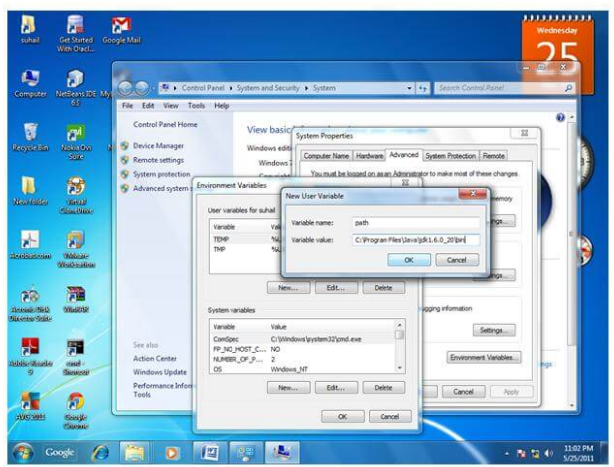

Environmental SetUp In Java Programming
Click the 'Environment variables' button under the 'Advanced' tab. Now, alter the 'Path' variable so that it also contains the path to the Java executable. Example, if the path is currently set to 'C:\WINDOWS\SYSTEM32', then change your path to read 'C:\WINDOWS\SYSTEM32;c:\Program Files\java\jdk\bin'.
How to set path in Java
The path is required to be set for using tools such as javac, java etc.
If you are saving the java source file inside the jdk/bin directory, path is not required to be set because all the tools will be available in the current directory.
But If you are having your java file outside the jdk/bin folder, it is necessary to set path of JDK.
There are 2 ways to set java path:
- temporary
- permanent
1) How to set Temporary Path of JDK in Windows
To set the temporary path of JDK, you need to follow following steps:
- Open command prompt
- Copy the path of jdk/bin directory
- Write in command prompt: set path=copied_path/li>
For Example:
| set path=C:\Program Files\Java\jdk1.6.0_23\bin |
2. How to set Permanent Path of JDK in Windows
For setting the permanent path of JDK, you need to follow these steps:
- Go to MyComputer properties -> advanced tab -> environment variables -> new tab of user variable -> write path in variable name -> write path of bin folder in variable value -> ok -> ok -> ok
1)Go to MyComputer properties
2)click on advanced tab
3)click on environment variables
4)click on new tab of user variables
5)write path in variable name
6)Copy the path of bin folder
7)paste path of bin folder in variable value
8)click on ok button
9)click on ok button
Now your permanent path is set.You can now execute any program of java from any drive.
Setting Java Path in Linux OS
Setting path in Linux OS is same as setting path in the Windows OS. But here we use export tool rather than set. Let's see how to set path in Linux OS:
| export PATH=$PATH:/home/jdk1.6.01/bin/ |
Here, we have installed the JDK in the home directory under Root (/home).
« Previous Next »